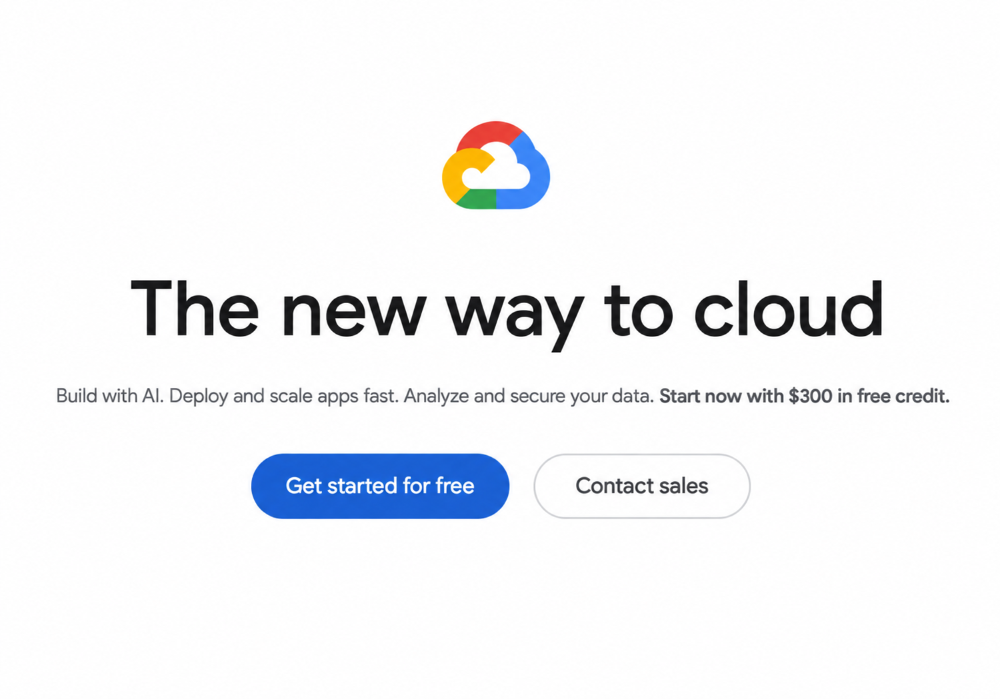
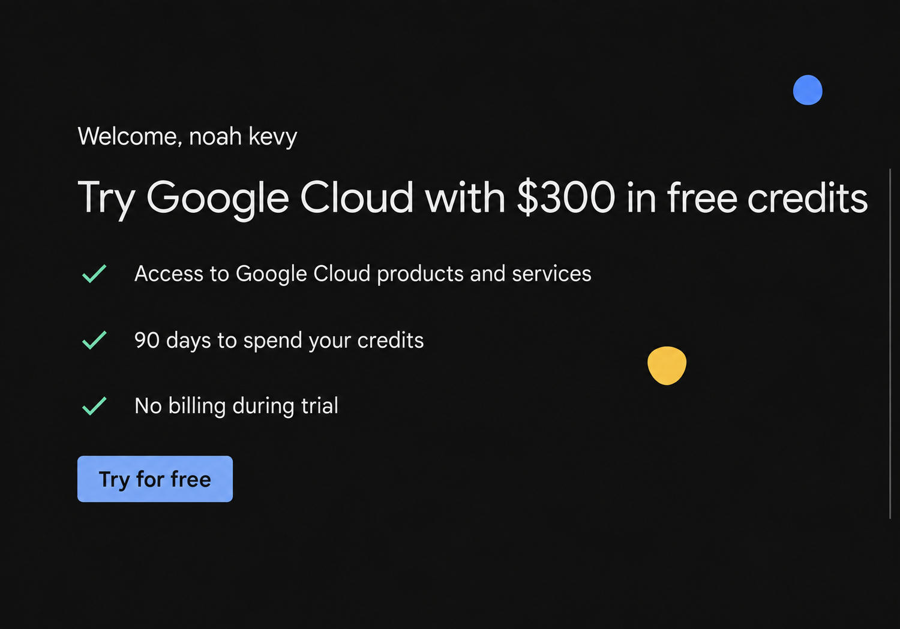

Step 1: Create an Account
In your browser navigate to the Google Cloud website.
Look in the upper right-hand corner, if you have a Google account it will be shown there. If it isn't, sign in or create an account.

Step 2: Start Your Trial
Navigate to the Cloud Console website.
Click Try for Free to get started. Follow the on-screen instructions.

Step 3: Create a New Instance
Again, navigate to the Cloud Console website.
Click on the navigation menu, in the upper left-hand corner. Scroll down and select Compute Engine.
Once the screen loads, click the Create instance button, which is located left-of-middle at the top of your screen.
Step 4: Configure the New Instance
Fill in the form fields to describe what the instance will be like. Most the of the fields should be left with the default values.
Select a Region that is near you.
Switch to the next form by clicking on OS and storage on the left-hand side. If you want to change the operating system, click the Change button and do so in the Boot disk pop-up menu.
Step 5: Start the New Instance
Click the Create button, which is located at the bottom-left of the screen.
The page may take a moment to load.
In the table named VM Instances, you will see that one row corresponds to your new instance. For example, the name of your instance is in the Name column.
Once the Internal IP and External IP cells are populated, your instance is ready to use.